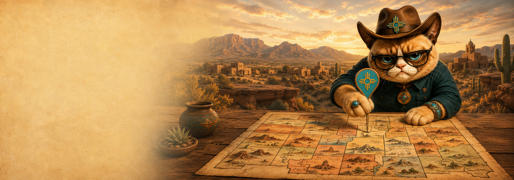
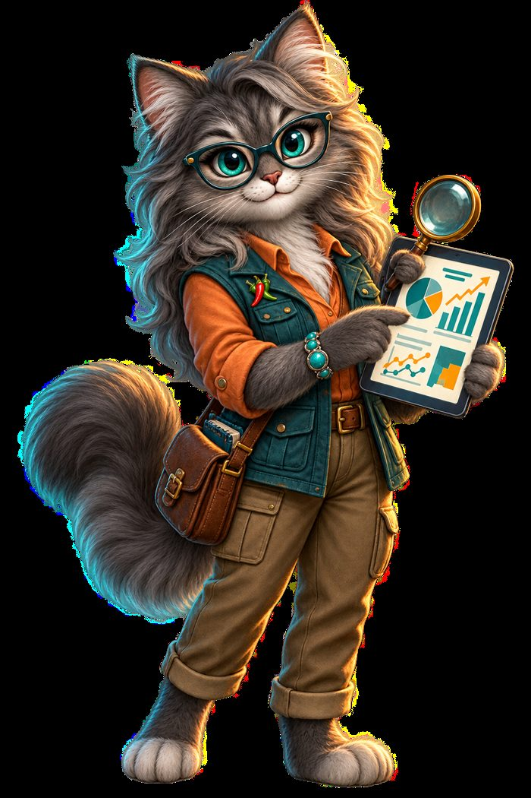
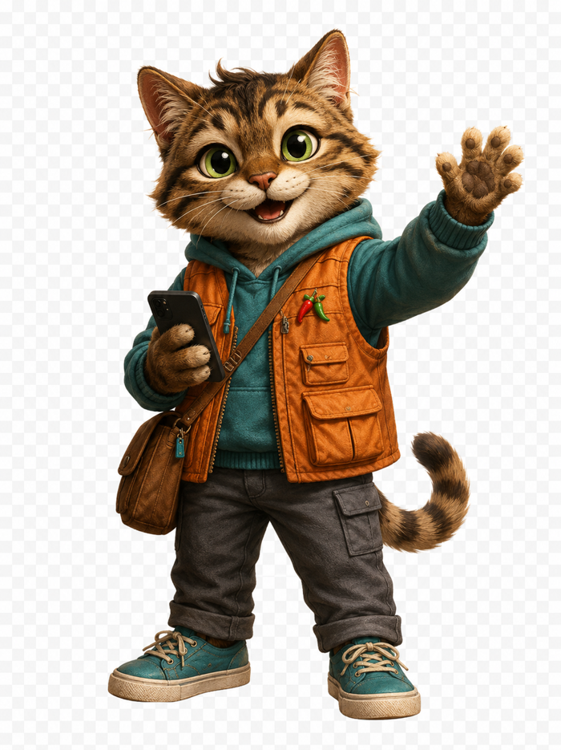

NEW MEXICO
IS TALKING.
Follow what's moving. Ask what matters. Share what the record supports.
🟢 LIVE RECORD. REAL PEOPLE. NEW MEXICO.
🔥 Trending in New Mexico
View all on Pulse →The stories moving right now — every one tied to a public record, never a rumor.

WatchingChoose Your Corner
Join the conversation where it happens.
Discord
Ask, learn, and chat with fellow civics nerds.
Join the server → 🎵TikTok
Short civics. Big impact. Explainers in 60s.
Follow @PolitiCatNM → 𝕏X (Twitter)
Real-time updates and quick takes.
Follow @PolitiCatNM → 📸Civic vibes, visual stories, behind the scenes.
Follow @PolitiCatNM → ▶YouTube
Deep dives, explainers, and live chats.
Watch & subscribe → ✉️Reach the den directly. What matters most.
PolitiCatNM@proton.me →Meet the Community Crew
Real characters. Real roles. Real commitment to New Mexico.
Don Gato
Civic InvestigatorDigging into records so you don't have to. No spin. Just facts.
Chispa
Community ReporterStories from the people and places that make New Mexico, New Mexico.
Secretary Meow
Records KeeperProtecting access to public records and your right to know.
Río Ranger
Community GuideConnecting voices across our towns, tribes, and barrios.

Data Paws
Analytics CatTurning numbers into know-how. Clear. Useful. Local.

Barrio Buddy
New Voices LiaisonWelcoming new folks and making sure everyone belongs.
THIS IS YOUR COMMUNITY.
YOUR QUESTIONS. YOUR NEW MEXICO.
Stay curious. Stay informed. Stay connected. Let's build a stronger, smarter, kinder New Mexico — together.